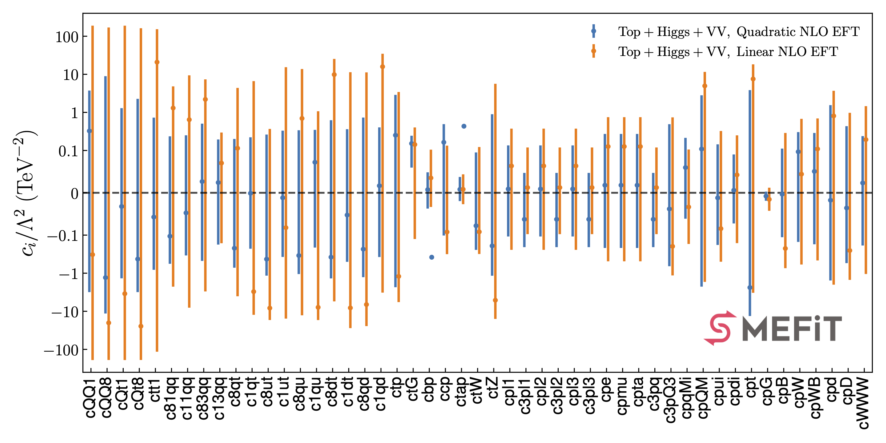
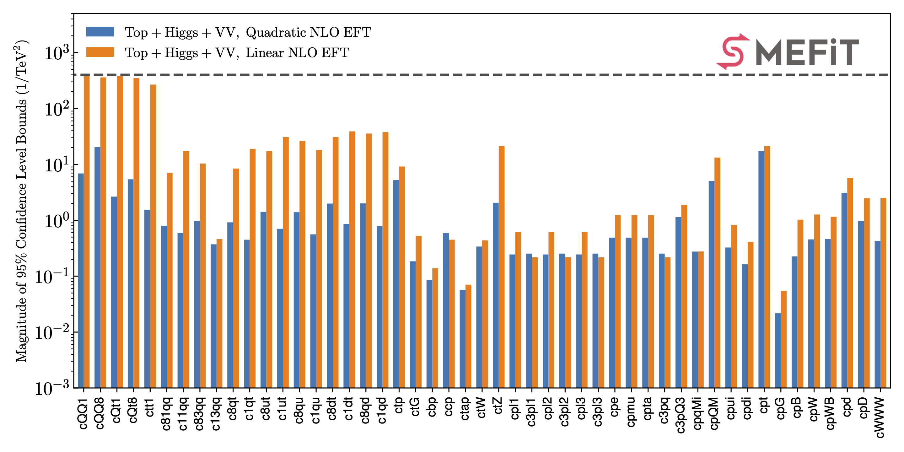
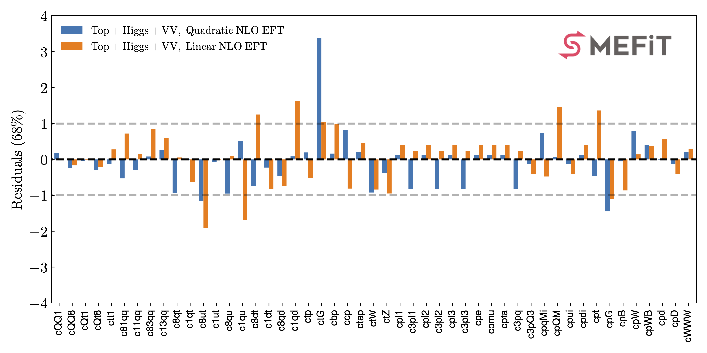
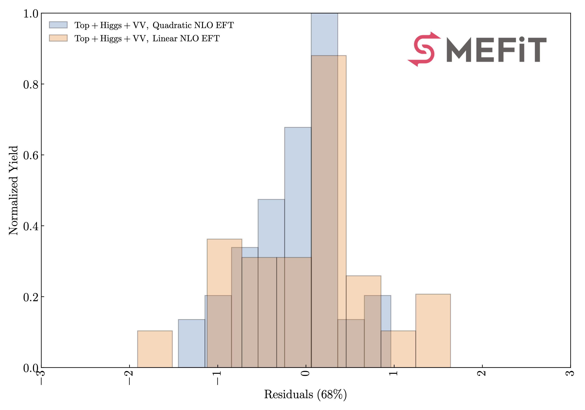
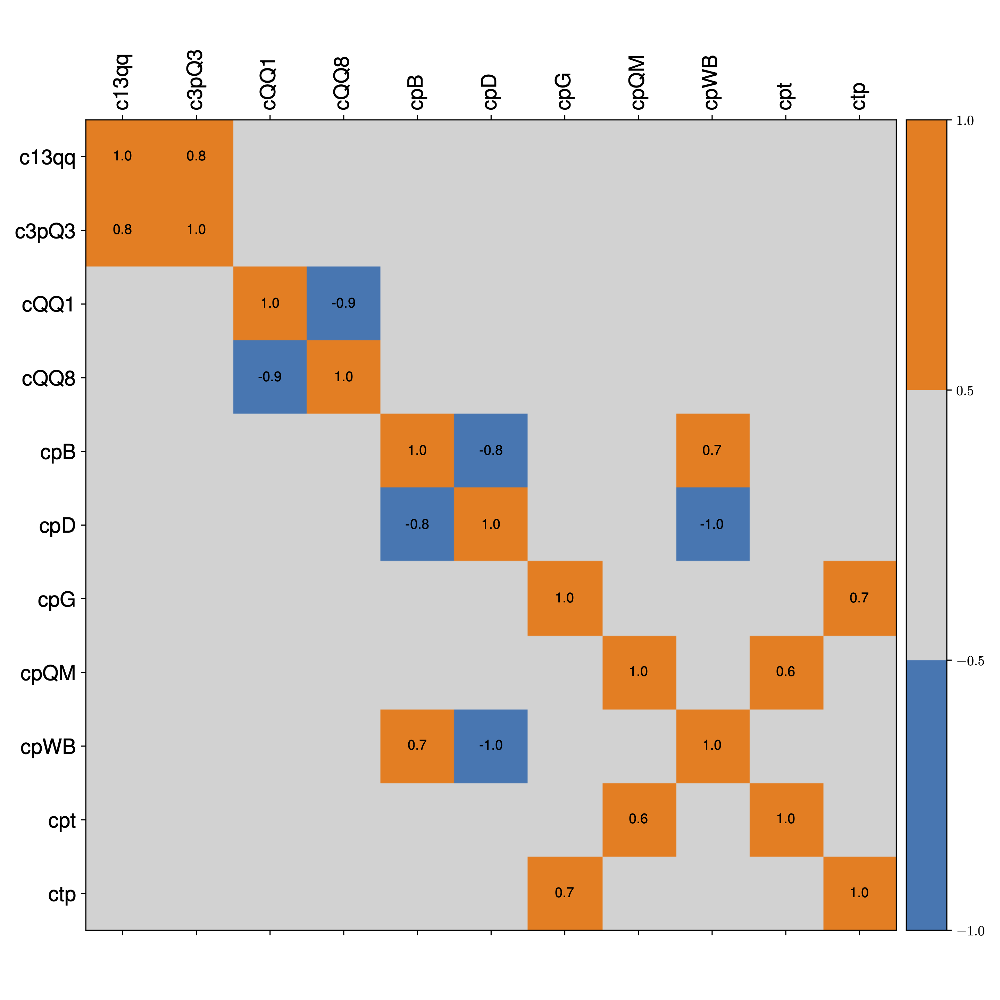

SMEFiT2.0
Here we present the results of the SMEFiT global analysis described in the following publication
Combined SMEFT interpretation of Higgs, diboson, and top quark data from the LHC, J. Ethier, G.Magni, F. Maltoni, L. Mantani, E. R. Nocera, J. Rojo, E. Slade, E. Vryonidou, C. Zhang [EMM+21]
This work develops a global interpretation of Higgs, diboson, and top quark production and decay measurements from the LHC in the framework of the SMEFT at dimension six. We constrain simultaneously 36 independent directions in its parameter space, and compare the outcome of the global analysis with that from individual and two-parameter fits. Our results are obtained by means of state-of-the-art theoretical calculations for the SM and the EFT cross-sections, and account for both linear and quadratic corrections in the EFT expansion. We assess the interplay and complementarity between the top quark, Higgs, and diboson measurements, deploy a variety of statistical estimators to quantify the impact of each dataset in the parameter space, and carry out fits in BSM-inspired scenarios such as the top-philic model.
{kind=link}
In this page you find information about the input and results from this global EFT analysis:
Operator basis
The EFT analysis presented in this work is based on the following operator basis, see Sect. 2 in the paper for the explicit definition of the various degrees of freedom and the flavour assumptions adopted. We categorize these EFT coefficients into four disjoint classes: four-quark (two-light-two-heavy), four-quark (four-heavy), two-fermion, and purely bosonic operators. Note that some of these coefficients are not independent but rather related among them via the EWPOs
In the table below we list the EFT coefficients considered in this work together with the notation used in the plots and in the output files associated to the analysis results.
Class |
EFT Coefficient |
Notation |
|---|---|---|
Two-light-two-heavy |
\(c_{Qq}^{1,8},~c_{Qq}^{1,1}~c_{Qq}^{3,8},~c_{Qq}^{3,1},~c_{tq}^{8},~c_{tq}^{1}\), |
|
Two-light-two-heavy |
\(c_{tu}^{8},~c_{tu}^{1},~c_{Qu}^{8},~c_{Qu}^{1},~c_{td}^{8},~c_{td}^{1},~c_{Qd}^{8},~c_{Qd}^{1}\) |
|
Four-heavy |
\(c_{QQ}^1,~c_{QQ}^8,~c_{Qt}^1,~c_{Qt}^8,~c_{tt}^1\) |
|
two-fermion |
\(c_{t\varphi},~c_{tG},~c_{b\varphi},~c_{c\varphi},~c_{\tau\varphi},~c_{tW}\) |
|
two-fermion |
\(c_{\varphi t},~c_{\varphi l_1}^{(1)},~c_{\varphi l_1}^{(3)},~c_{\varphi l_2}^{(1)},~c_{\varphi l_2}^{(3)},~c_{\varphi l_3}^{(1)},\) |
|
two-fermion |
\(c_{\varphi l_3}^{(3)},~c_{\varphi e},~c_{\varphi \mu},~c_{\varphi \tau},~c_{\varphi q}^{(3)},~c_{\varphi q}^{(-)},~c_{\varphi u},~c_{\varphi d}\) |
|
Purely bosonic |
\(c_{\varphi G},~c_{\varphi B},~c_{\varphi W},~c_{\varphi d},~c_{\varphi W B},~c_{\varphi D},c_{WWW}\) |
|
Analysis code
The results collected in the table above have been obtained for the global input dataset and for the baseline theory settings, which in particular include NLO QCD corrections to the EFT cross-sections whenever available. However many users might be interested in evaluating statistical estimators for fits based on different input datasets, different settings of the EFT calculations, or for fits where the parameter space has been restricted as motivated by specific UV-complete models. For example, one may wish to compare with the outcome of the global fit based on LO EFT calculations, or to use the bounds derived in the top-philic scenario.
The posterior probability distributions corresponding to all the fits presented in this work are made available in the SMEFiT GitHub public repository, together with Python analysis code to process them and produce a range of statistical estimators. For instance, upon choosing a given fit (see Released fits), whose output is constitured by \(N_{\rm spl}\) posterior samples for the \(n_{\rm op}=49\) EFT coefficients considered in this analysis, the analysis code can evaluate statistical estimators such as means, standard deviations, and correlations,
as well as other estimators such as confidence level intervals and higher moments beyond the parabolic approximation. It then produces a range of plots such as the ones displayed below.
   {kind=link}
{kind=link}
{kind=link}
{kind=link}
Released fits
The list of fits that are made available with this release of the SMEFiT global analysis are summarised
in the table below.
For each configuration we provide a runcard and the corresponding posterior distributions stored in json format.
Descriptor |
Dataset |
Theory settings |
Methodology |
|---|---|---|---|
Global |
NLO QCD in EFT + \(\mathcal{O}(\Lambda^{-4})\) |
Default |
|
Global |
NLO QCD in EFT + \(\mathcal{O}(\Lambda^{-2})\) |
Default |
|
Global |
LO QCD in EFT + \(\mathcal{O}(\Lambda^{-4})\) |
Default |
|
Global |
LO QCD in EFT + \(\mathcal{O}(\Lambda^{-2})\) |
Default |
|
Higgs-only |
NLO QCD in EFT + \(\mathcal{O}(\Lambda^{-4})\) |
Default |
|
Top-only |
NLO QCD in EFT + \(\mathcal{O}(\Lambda^{-4})\) |
Default |
|
Diboson cross-sections removed |
NLO QCD in EFT + \(\mathcal{O}(\Lambda^{-4})\) |
Default |
|
Bins with \(E\ge 1~{\rm TeV}\) removed |
NLO QCD in EFT + \(\mathcal{O}(\Lambda^{-4})\) |
Default |
|
Global |
NLO QCD in EFT + \(\mathcal{O}(\Lambda^{-4})\) |
Constraints from top-philic scenario |
Requests for variants of these fits should be addressed to the SMEFiT authors.